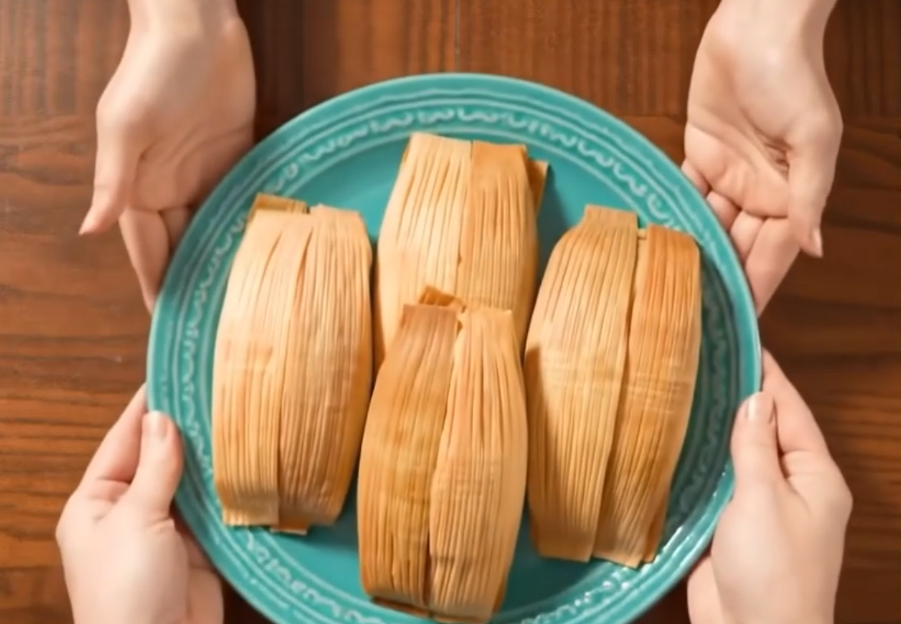

Nuestra Historia

De la receta de la abuela a tu mesa
La tamaliza nació hace más de 20 años como un pequeño sueño familiar. La matriarca de nuestra familia, Doña Elvira, siempre fue famosa en el barrio por sus tamales, cuya receta secreta ha pasado de generación en generación. Lo que comenzó como un pequeño puesto para los vecinos, hoy se ha convertido en un punto de referencia para los amantes del sabor auténtico y tradicional.
Mantenemos viva la tradición utilizando ingredientes frescos y de la más alta calidad, y preparando cada tamal con el mismo amor y dedicación que nos enseñó la abuela. Gracias por ser parte de nuestra historia.